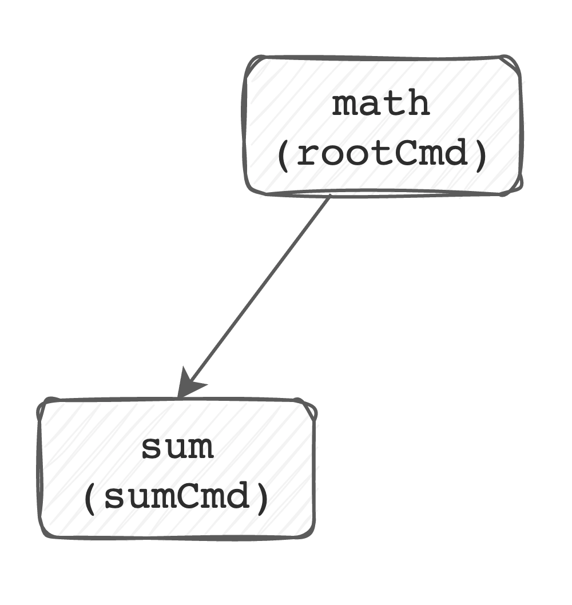
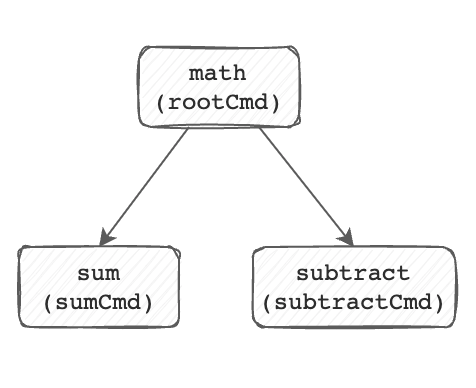
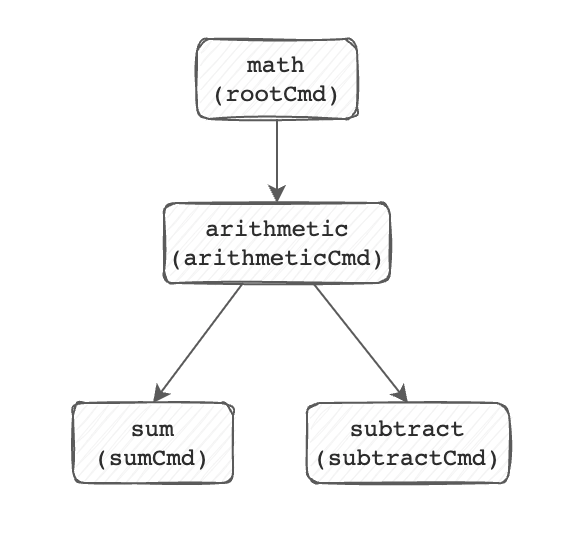
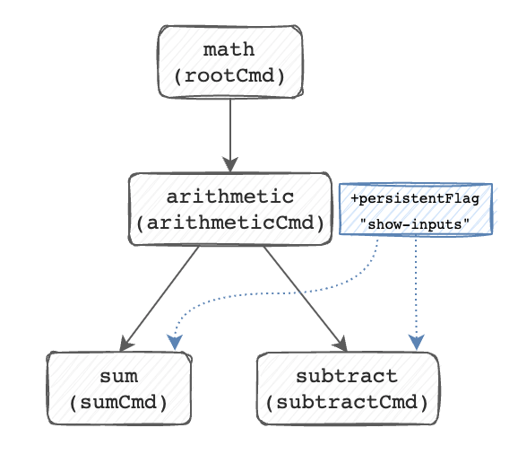

Introduction
This is a quick reference guide on what the spf13/cobra package is, and how it can be used.
As a prerequisite, you'll need to be able to read Golang. This does not aim to replace the Cobra documentation, but instead just act as a cheatsheet/refrence for accomplishing basic tasks with the spf13/cobra library.
The first chapter is a bit more verbose as it sets the stage as to what Cobra is and what problem it solves for developers.
What is Cobra?
Cobra is a commandline interface development toolkit for Golang. It allows enables Golang developers to build robust and complex commandline interfaces easily.
It gives developers a framework to be able to build interfaces that need more than just the ability to parse a series of flags and arguments on a single command. It gives developers the ability to build subcommands, each with their own behaviors, flags, arguments, expectations, etc.
The anatomy of a commandline interface
Let's take a look at a typical commandline interface. Say we invoke the cat
command:
cat -n myfile.txt
We could describe this as:
catis our command.-nis a short flag.myfile.txtis our argument.
Building something like this call is fairly simple in golang with just the
standard library. Building our main.go (or equivalent) file would produce a
binary on disk, which acts as our command.
We would just need to reach into the standard library for the flag package, which gives us the ability to register and parse flags.
Finally, we would just need to review the argument list to grab the final value of
myfile.txt that the user provided, and take action.
But what if we want something more complex?
For reference, a naive implementation of cat with the -n flag using the
flag package is here.
A more complex interface
Let's take a look at a typical kubectl invocation:
kubectl apply -f mypod.yaml
This commandline interface looks a little different in that now we've got this structure here:
COMMAND SUBCOMMAND SHORTFLAG ARGUMENT
kubectl apply -f mypod.yaml
So here we see this idea of a subcommand.
The kubectl command itself takes on a more organizational role, in that it
almost defines the context for a subcommand ("We're working with a kubernetes
cluster").
Running kubectl by itself generally does not take any action, other
than displaying help text. But while it does not take any action, it may itself
have some of its own flags that apply to all subcommands (see kubectl options).
The actual action we're taking here is described by the subcommand: apply
("we're going to take some data and apply it to the cluster").
And if you're familiar with kubectl, you'll know that it gives us many more
commands to interact with our cluster (such as get, describe, create,
etc). And each subcommand may have its own flags, on top of those already built
into the top-level kubectl command.
Building this kind of commandline interface with just the flag package can be complex. The flag package helps us extract short and long flags out of the arguments passed into our binary by the user, but we need to build in these relationships such that each subcommand may have its own flags, and the base command itself has its own flags. Before you know it, you've written more logic to handle the relationships between your commands than your actual business logic.
This is the problem the Cobra library solves for us.
Hands on with Cobra
At this point, we'll start to work with cobra itself, and go through a few use cases that you might apply in you development. The examples here will be a bit brief, but that's simply because this should serve as a reference, and not as documentation for how to use Cobra in your project.
The example logic that we'll use in our command may seem a bit silly; we don't care too much about what this example command does, but rather what we can do to cobra to achieve our end goal. Those concepts are what you will want to apply to your projects.
The Cobra CLI
Using cobra in your project is as simple as importing github.com/spf13/cobra
where you need it, and then building out your command structure. If you're just
getting started using cobra, however, it may be beneficial to instead use
cobra-cli, which is a scaffolding tool for cobra applications.
We'll use that here, but just know that it's not a requirement. You can just as easily start your CLI project by importing cobra and laying out your project as you want.
Follow the instructions here for
installing the Cobra command line tool. The instructions indicate that you'll
install the "latest" version of cobra-cli, which at the time of this writing
appears to be v1.3.0. The commands you see here may differ slightly if you have
a different version, but that's okay.
Once you've installed cobra-cli, make sure it's in your $PATH by calling
cobra-cli --help
If the you get a command not found error (or similar, then that implies that
your $GOBIN is not in your $PATH). Resolve that first before moving on.
This book will build out a math binary that has several mathematical
operations encompassed as subcommands. Like I mentioned, it's a bit silly and
contrived, but we don't really want to implement a ton of logic here - we just
want to see what we can do with cobra.
The completed source code for the command built here will be available at https://github.com/opdev/cobra-primer/math.
Creating a new project
Let's create a new project. These instructions try not to make assumptions about where you like to write your Go code, so it's a bit vague as to where you're making these directories by design.
Create a new golang project where you like to store your projects (if you're
using gomodules), or within your $GOPATH (somewhere like
$GOPATH/src/github.com/<yourusername>/).
mkdir math
Initialize gomodules in this path by calling either go mod init (if you're
within your $GOPATH, or go mod init <module> (if you're working in module
mode somewhere else on your filesystem).
Once you're in the math directory, run the new cobra-cli command with a few
flags.
cobra-cli init --author "<your name here>"
Example:
cobra-cli init --author "<your name here>"
Response
Your Cobra application is ready at
/Users/me/.go/src/github.com/opdev/cobra-primer/math
Take a look at your folder; you should see several new files that have been scaffolded for you.
.
├── LICENSE
├── cmd
│ └── root.go
├── go.mod
├── go.sum
└── main.go
Take a look at main.go.
package main
import "github.com/opdev/cobra-primer/math/cmd"
func main() {
cmd.Execute()
}
Aside from some comments that I've truncated from this file for this book, the overall contents is incredibly short.
All that's happening here is that we're importing a local package cmd and
running some function defined there called Execute().
At this point, your project should build and run without issue. Try a go run .
$ go run .
A longer description that spans multiple lines and likely contains
examples and usage of using your application. For example:
Cobra is a CLI library for Go that empowers applications.
This application is a tool to generate the needed files
to quickly create a Cobra application.
A little blurb if text is returned, generated by cobra-cli while scaffolding
out what's called the Root Command.
The Root Command
Inside of the cmd directory ("package") that cobra-cli scaffolded for you
should be a file called root.go. Let's look at some key parts of this file
(I've truncated a few sections with ... so that it sits cleaner in this book.)
// rootCmd represents the base command when called without any subcommands
var rootCmd = &cobra.Command{
Use: "math",
Short: "A brief description of your application",
Long: `...`,
// Uncomment the following line if your bare application
// has an action associated with it:
// Run: func(cmd *cobra.Command, args []string) { },
}
Here we define the variable rootCmd at the global scope to be a
*cobra.Command. the cobra.Command struct is the building block of
cobra-based applications, and is how we define almost everything we need
(metadata, logic, etc.) to execute our business logic. Every command and
subcommand will be defined as one of these cobra.Commands. We'll use these to
build out our tree of subcommands.
As we saw, our main() function calls the Execute() function in this package,
which itself just wraps our rootCmd.
// Execute adds all child commands to the root command and sets flags appropriately.
// This is called by main.main(). It only needs to happen once to the rootCmd.
func Execute() {
err := rootCmd.Execute()
if err != nil {
os.Exit(1)
}
}
As the scaffolded comment suggests, this is called by main(), and only ever
needs to happen here.
As mentioned in the kubectl context, the root command of a non-trivial CLI
application is typically organizational, and typically doesn't have any logic
associated with it. That way, when a user runs our command with no flags,
subcommands, args, or otherwise, they get the help output in return to help
guide them.
Adding Relevant Help Text
Our root command is currently returning scaffolded help text. That's not super helpful - let's update that to something like this.
var rootCmd = &cobra.Command{
Use: "math",
Short: "Execute fun math functions",
}
I've removed the Long key from the rootCmd. For your actual projects,
provide something useful there, such as links to documentation, a longer
explanation of your goals with this tool, some examples - whatever you see fit.
Save, build and run the project, and you should see our new short text is printed whenever I run it with no arguments:
$ go build -o math . && ./math
Execute fun math functions
Our help output is pretty bare right now, but it'll improve as we add subcommands.
Adding a subcommand
So now lets add an easy subcommand - sum, to make our CLI function like this:
math sum 1 2 3
>6
We'll use cobra-cli to add a new subcommand to the rootCmd, and save us
from having to write out the new *cobra.Command ourselves. Run this from the
root of your source code repository.
cobra-cli add sum
You should now see a new cmd/sum.go file in place:
.
├── LICENSE
├── cmd
│ ├── root.go
│ └── sum.go <-- new!
├── go.mod
├── go.sum
├── main.go
└── math
Open this file, and take a look at the init() function declaration:
func init() {
rootCmd.AddCommand(sumCmd)
}
This is where we start building our tree of commands. Here we've taken rootCmd
and added the new sumCmd to it as a subcommand. Our tree looks something like
this:

If you build and run your project now, you'll see our help output has changed.
$ go build -o math . && ./math
Execute fun math functions
Usage:
math [command]
Available Commands:
completion Generate the autocompletion script for the specified shell
help Help about any command
sum A brief description of your command
Flags:
-h, --help help for math
-t, --toggle Help message for toggle
Use "math [command] --help" for more information about a command.
We now have our sum command with its (Short) description, as well as some
flag definitions (more to come on those later, it was scaffolded by cobra-cli
and I've ignored it so far), and generic subcommands like help. You now also
see a Usage statement.
Now, you can also run the math sum command. Try that now.
$ ./math sum
sum called
Practice:
If you're following along, go ahead and practice what we did with the root
command: Change the Short and Long descriptions for the sumCmd to indicate
that we will take an arbitrary number of integers and return the sum of those
values.
Implementing Logic
So now that we have a sum command, we can implement some logic.
If you take a look at the sumCmd, you'll notice that it has a key called Run
with a scaffolded anonymous function that runs fmt.Println("sum called").
That's what we saw in the last section when we ran math sum.
var sumCmd = &cobra.Command{
Use: "sum",
...
Run: func(cmd *cobra.Command, args []string) {
fmt.Println("sum called")
},
}
These Run functions are where you will implement the business logic for your
subcommand. The Run documentation is below:
// Run: Typically the actual work function. Most commands will only implement this.
Run func(cmd *Command, args []string)
Effectively, the Run key in a cobra.Command struct just needs to be a
function that has this exact signature. By convention, I prefer to have these
functions defined (as opposed to being anonymous functions), so you might see me
do something like this:
var sumCmd = &cobra.Command{
Use: "sum",
...
Run: sumCommandRun,
}
func sumCommandRun(cmd *cobra.Command, args []string) {
fmt.Println("sum called")
}
Subjectively, this makes the cobra command a little bit easier to read.
Let's replace this placeholder println with some logic. I'll write a sum
function that look something like this (there may already be sum functions, but
these are simple enough to write):
func sum(values ...int) int {
x := 0
for _, v := range values {
x += v
}
return x
}
You should be able to call this function with an arbitrary number of integer values and get the sum of those values. Check it out on the Go Playground
Our core logic is written, so now we just need to wire up the arguments that the user provided to this function.
Wiring up Arguments
At this point, we have our business logic (the sum(...) function) written and
working. We just need to replace the placeholder code in our sumCommandRun so
that it uses the sum function. We need to get the user's arguments passed over
to our sum function so that everything works.
If you look at the function signature required for the cobra.Command.Run
struct key, and our sumCommandRun function, you'll see that args is a
parameter we can use, and it contains the arguments passed in by the user,
without flags or the subcommand structure.
So for example, if the user ran math sum 1 2 3, then we'd expect args to be
[]string{"1", "2", "3"}.
With that in mind, the problem we have with args is that it's a []string.
Let's convert that over to a []int which is what our sum function uses. The
logic to do this isn't important, but helps us complete this example.
func sumCommandRun(cmd *cobra.Command, args []string) {
// convert args which is []string to []int
values := make([]int, len(args))
for i, v := range args {
vAsInt, _ := strconv.Atoi(v)
values[i] = vAsInt
}
fmt.Println(sum(values...))
}
Then build and run the sum subcommand:
# go build -o math . && ./math sum 2 3 4
9
Everything works!
So the args parameter that we have to work with here in our Run function
contains all of the arguments that are passed in by the user to this subcommand.
Feel free to fmt.Println([]args), and then run math sum with random values
to see what gets printed.
Returning an error
In the last section, we wired up our user's arguments and passed it to our sum
function. What happens if the user passes in a string value? What about a
decimal?
# ./math sum 1 2 3 foo
6
# ./math sum 1 2 3 2.1
6
Our sum function isn't even batting an eye! It's just completely ignoring the
string foo, and the decimal 2.1 value. That's because we ignored our error
when we converted from []string to []int. Take a look at the line with block
[1].:
// ...
for i, v := range args {
vAsInt, _ := strconv.Atoi(v) // [1]
values[i] = vAsInt
}
// ...
Here we use the strconv librarie's Atoi function to convert the string value
to an integer, and then we disregard the second return value which is an error.
Ideally, we want to return that error, but we have a bit of a problem. Our
sumCommandRun function doesn't return an error, but that's easy enough to fix:
func sumCommandRun(cmd *cobra.Command, args []string) error { // return an error
// convert args which is []string to []int
values := make([]int, len(args))
for i, v := range args {
vAsInt, err := strconv.Atoi(v)
if err != nil { // new code!
return fmt.Errorf("you provide a value that was not an integer: %s", v)
}
values[i] = vAsInt
}
fmt.Println(sum(values...))
return nil // all went well, return no error
}
As soon as we reconfigure our function, our sumCmd should show an error that
reads:
cannot use sumCommandRun
(value of type func(cmd *cobra.Command, args []string) error)
as
func(cmd *cobra.Command, args []string) value in struct literal
This is because the cobra.Command.Run key enforces a specific function
signature that matched what we were using previously. If we want to return an
error in our function, we can do so by instead assigning our function to RunE.
Its function signature is identical, but it returns an error.
//...
var sumCmd = &cobra.Command{
Use: "sum",
//...
//Run: sumCommandRun // this is what we used before
RunE: sumCommandRunE, // and replaced it with this.
}
/...
By convention, I've also renamed our sumCommandRun to sumCommandRunE to make
it match the command struct key to which it applies.
The project should be happy, and you should see an error returned when the user provides non-integer values.
$ go build -o math . && ./math sum 1 2 3 foo
Error: you provide a value that was not an integer: foo
Usage:
math sum [flags]
Flags:
-h, --help help for sum
And since we've returned an error, the help output is provided to the user.
Enforcing Expectations on Arguments
What happens if we don't provide any arguments to our math sum subcommand?
# ./math sum
0
I supposed that's technically correct! We didn't provide arguments, so the sum
of 0 is... well 0. But instead, let's make sure the user provides values, or
otherwise print the help output. One way to do that is using the
cobra.Command.Args key. This key specifies that its type is PositionalArgs.
If we look through cobra's documentation, we see that type defined as a function
with this signature:
type PositionalArgs func(cmd *Command, args []string) error
Check it out in the documentation here.
That means we can write a function that fits that signature, and pass it to
sumCmd's Args key. Since we've got args as a parameter here as well, this is
actually pretty easy to write. But Cobra actually makes some pre-defined
functions available to us, and one of those does exactly what we want:
// MinimumNArgs returns an error if there is not at least N args.
func MinimumNArgs(n int) PositionalArgs`
We can use that to enforce the expectation that we have at least 1 argument by
passing this function to the Args key in our sumCmd:
// sumCmd represents the sum command
var sumCmd = &cobra.Command{
Use: "sum",
Args: cobra.MinimumNArgs(1), // Add it here
Short: "A brief description of your command",
// ...
}
Now the command properly indicates that we didn't provide enough arguments when called:
# go build -o math . && ./math sum
Error: requires at least 1 arg(s), only received 0
Usage:
math sum [flags]
Flags:
-h, --help help for sum
There are several other PositionalArg (or Args compatible) functions in the
cobra library, but since we know the function signature, we can build our own.
In addition the cobra library also lets us enforce multiple requirements on our
arguments as well by using the cobra.MatchAll function
doc.
Writing to STDOUT and STDERR
It's fairly common to use fmt.Println to print output to the user. Both
Println and Printf will actually print to os.Stdout for us, and so it
serves as a convenience function for hacking on some code quickly, and getting
some text in front of the user.
ref
Cobra commands actually provide some wiring for printing things to the user via
Stdout or Stderr that allows us to configure its outputs to write to anything
that fulfills the io.Writer interface (e.g. log files, byte buffers, etc). We
don't need to concern ourselves with that quite yet, but what we do want to do
instead of using fmt.Println is use the built-in output for stdout/stderr if
we need them.
In our sumCommandRunE, we write the sum using fmt.Println:
func sumCommandRunE(cmd *cobra.Command, args []string) error { // return an error
// convert args which is []string to []int
values := make([]int, len(args))
for i, v := range args {
vAsInt, err := strconv.Atoi(v)
if err != nil { // new code!
return fmt.Errorf("you provide a value that was not an integer: %s", v)
}
values[i] = vAsInt
}
fmt.Println(sum(values...)) // Writes happen here!
return nil
}
Instead, lets leverage the output target configured for the command. In fairness, we haven't reconfigured it in this example, but we can, and that will become more important when testing your cobra commands.
Change the line to look like this:
// fmt.Println(sum(values...)) // Old!
fmt.Fprintln(cmd.OutOrStdout(), sum(values...))
If you're not familiar with Fprintln, it effectively allows you to provide the
write target (the io.Writer interface) instead of assuming it should be
os.Stdout, as fmt.Println does. In this instance, we're passing in the cobra
command's configured writer. It, internally, will write to os.Stdout if nothing
else was configured.
We don't use it here, but there's an equivalent cmd.OutOrStderr function as
well.
If you run the command, nothing should have changed.
$ go build -o math . && ./math sum 1 3
4
Adding an alias
As your start to develop your tool, there may be cases where you want to alias a given subcommand. This is very easy to do, as there is an Alias key in the cobra.Command struct. Let's say that total is an alias of sum, such that a user can call math total and get the same logic.
var sumCmd = &cobra.Command{
Use: "sum",
Aliases: []string{"total"}, // total!
// ... nothing else changed
}
Now run the command with total instead of sum, and see the same logic applied.
# go build -o math . && ./math total 1 2 3
6
This isn't a perfect user experience. You'll notice that total is not shown in the subcommand list:
./math -h
Execute fun math functions
Usage:
math [command]
Available Commands:
completion Generate the autocompletion script for the specified shell
help Help about any command
sum A brief description of your command
Flags:
-h, --help help for math
-t, --toggle Help message for toggle
Use "math [command] --help" for more information about a command.
It is shown in the help output for sum, however:
./math sum -h
Given an arbitrary number of integer arguments,
this will return the sum of all values.
Usage:
math sum [flags]
Aliases:
sum, total
Flags:
-h, --help help for sum
To that end, aliases are mostly helpful in cases where you have shorthand names
for common functions. An example might be cp for copy, mv for move, and
rm for remove.
Adding another subcommand
Let's break out cobra-cli and add a subtract subcommand! Run this from the
base of your repository.
$ cobra-cli add subtract
subtract created at /Users/me/.go/src/github.com/opdev/cobra-primer/math
Now we've got a cmd/subtract.go file:
.
├── LICENSE
├── cmd
│ ├── root.go
│ ├── subtract.go
│ └── sum.go
├── go.mod
├── go.sum
├── main.go
└── math
Modify the Long and Short descriptions as you see fit. As a practice, try the following actions:
- Make the command accept only 2 positional arguments, e.g.
math subtract 2 3 - Swap out the
Runfunction with a standaloneRunEfunction. - Convert the
argsvalues to integers, returning errors if encountered (copy this from thesumcommand, or better yet, make it its own function and reuse it here).
When done, the math subtract function should work like this:
$ ./math subtract 2 3
-1
$ ./math subtract 2 3 4
Error: accepts 2 arg(s), received 3
Usage:
math subtract [flags]
Flags:
-h, --help help for subtract
Adding a flag
So far, we've been working with subcommands and positional args. For example:
COMMAND SUBCOMMAND POSITIONALARGS...
math subtract 1 2
Cobra documentation suggests that your subcommands should describe your
actions, and flags should modify those actions. So for the subtract command,
we're going to add a flag that inverts the sign of the integer. Lets call it
--invert-sign. Our result would look like:
math subtract --invert-sign 1 2
1
It's a pretty silly example, but we don't want to spend time on our logic. We want to spend time on cobra!
So let's implement a flag in the subtract.go file. Take a look at the init
section at the very bottom. It probably contains some commented code:
func init() {
rootCmd.AddCommand(subtractCmd)
// Here you will define your flags and configuration settings.
// Cobra supports Persistent Flags which will work for this command
// and all subcommands, e.g.:
// subtractCmd.PersistentFlags().String("foo", "", "A help for foo")
// Cobra supports local flags which will only run when this command
// is called directly, e.g.:
// subtractCmd.Flags().BoolP("toggle", "t", false, "Help message for toggle")
}
It also already contains our AddCommand call, binding the subtractCmd to our
rootCmd. We didn't have to do any of that wiring - it was done for us by
cobra-cli.
We're going to create a local flag, and so we're going to reuse the last line
of this commented code. Go ahead and uncomment this line. Replace toggle with
invert-sign, and t with i.
func init() {
rootCmd.AddCommand(subtractCmd)
// ...
subtractCmd.Flags().BoolP("invert-sign", "i", false, "inverts the sign of the result.")
}
The invert-sign value is what will become the long flag. Users will be able to
include --invert-sign in their command call once we add this to our
subtractCmd. The i is the short flag. Users can do either the long flag,
or the short flag; they will mean the same thing.
The default value will be false, and the final string of text is just the
description of the flag's behavior.
Finally, this is a boolean flag, as denoted by the method call which is BoolP.
There are several other types of flags, such as StringP, IntP, etc. The P in
BoolP denotes that you also want to include a short flag, which is nice and
convenient for users. If you prefer not to include a short flag, just use
Bool, or whatever type of flag you want.
If you build and run the project now, you see that the subtract subcommand has
our new flag and its description.
$ go build . && ./math subtract -h
subtract integers
Usage:
math subtract [flags]
Flags:
-h, --help help for subtract
-i, --invert-sign inverts the sign of the result.
That said, enabling the flag doesn't change anything, so we need to update our
subtractCommandRunE to use this value. Doing that is simple enough. Right
before we print things to the user, lets run our subtract function and then
invert the sign if the user requested it. The value of the flag is stored in our
cmd parameter.
func subtractCommandRunE(cmd *cobra.Command, args []string) error {
// .. everything up here is unchanged ...
result := subtract(values...)
invert, _ := cmd.Flags().GetBool("invert-sign") // get the flag value!
if invert {
result = -result
}
fmt.Fprintln(cmd.OutOrStdout(), result)
return nil
}
Adding subcommands to subcommands
So far, we've add the subtract and sum subcommands to the math root
command. But it's possible to also add subcommands to other subcommands.
Let's build a subcommand that logically groups subtract and add, called
arithmetic. Let's break out cobra-cli to build out the base subcommand
arithmetic.
$ cobra-cli add arithmetic
arithmetic created at /Users/me/.go/src/github.com/opdev/cobra-primer/math
With this in place, let's go ahead and disable the Run function so that calling
math arithmetic just displays help output.
var arithmeticCmd = &cobra.Command{
Use: "arithmetic",
Short: "basic arithmetic functions",
}
To move sum and subtract to be organized under arithmetic instead of the
root command math, just open sum.go and subtract.go to their init()
functions, and replace rootCmd.AddCommand with arithmeticCmd.AddCommand.
Here's what subtract.go's init function looks like now:
func init() {
arithmeticCmd.AddCommand(subtractCmd)
subtractCmd.Flags().BoolP("invert-sign", "i", false, "inverts the sign of the result.")
}
And our command "tree" went from this:

to this:

And our commands are logically grouped with the arithmetic subcommand:
$ go build . && ./math arithmetic --help
basic arithmetic functions
Usage:
math arithmetic [command]
Available Commands:
subtract subtract integers
sum add integers
Flags:
-h, --help help for arithmetic
Use "math arithmetic [command] --help" for more information about a command.
If you were scaffolding a net-new command using cobra-cli and you wanted it
organized under some command OTHER than the root command, you can pass the
--parent flag to cobra-cli which will organize the new command under the new
parent.
Marking commands deprecated
Say you need to deprecate the sum command in favor of an addition command.
In this case, you simply add a cobra.Command.Deprecated key with a string
indicating the message you want printed to the user.
// source: cmd/sum.go
var sumCmd = &cobra.Command{
// ...nothing else changed...
Deprecated: `This command will be replaced by the "addition" command in the next release`,
// ...nothing else changed...
RunE: sumCommandRunE,
}
And the message is passed to the user when this command is called.
$ go build . && ./math arithmetic sum --help
Command "sum" is deprecated, This command will be replaced by the "addition" command in the next release
Given an arbitrary number of integer arguments,
this will return the sum of all values.
Usage:
math arithmetic sum [flags]
Aliases:
sum, total
Flags:
-h, --help help for sum
13:20:44 ~/.go/src/github.com/opdev/cobra-primer/math
Adding hidden commands
It's possible to add "hidden" commands, which are commands that do not show up
in help output but can be called. I don't have a great use case for it, but
either way, it's just a matter of making adding cobra.Command.Hidden and
setting it to true. I've scaffolded a subcommand supersecretmath that I've
marked hidden.
$ cobra-cli add supersecretmath
supersecretmath created at /Users/me/.go/src/github.com/opdev/cobra-primer/math
// source: cmd/supersecretmath.go
package cmd
import (
"fmt"
"github.com/spf13/cobra"
)
// supersecretmathCmd represents the supersecretmath command
var supersecretmathCmd = &cobra.Command{
Use: "supersecretmath",
Hidden: true,
Run: func(cmd *cobra.Command, args []string) {
fmt.Println("This is where we do super secret math!")
},
}
func init() {
rootCmd.AddCommand(supersecretmathCmd)
}
We can't see this command in the help output!
$ go build . && ./math --help
Execute fun math functions
Usage:
math [command]
Available Commands:
arithmetic basic arithmetic functions
completion Generate the autocompletion script for the specified shell
help Help about any command
Flags:
-h, --help help for math
-t, --toggle Help message for toggle
Use "math [command] --help" for more information about a command.
But we can certainly call it without a problem:
$ go build . && ./math supersecretmath
This is where we do super secret math!
Adding persistent flags
At this point, we have multiple levels of commands. What if we want a common
flag across all levels of subcommands? Let's implement a --show-inputs flag that
prints our inputs like so:
# math arithmetic sum --show-inputs 1 2
1+2=3
# math arithmetic subtract --show-inputs 1 2
1-2=-1
We could add this flag as a BoolP to both the subtractCmd and the sumCmd,
but we should instead bind it to the arithmeticCmd as a PersistentFlag.
If you still have the comments scaffolded in the init() func by cobra-cli
for the cmd/arithmetic.go file, you might see this line here:
func init() {
// ... omitted
// arithmeticCmd.PersistentFlags().String("foo", "", "A help for foo")
// ... omitted
}
A PersistentFlag is one that is passed along to child subcommands. Whereas a
Flag on arithmeticCmd would not be passed down to sumCmd or
subtractCmd, a PersistentFlag is made available to both of them.
Uncomment this line and make it a BoolP flag called show-inputs, with
shortflag s. Note: Making this a BoolP may require adding a parameter to the
function call!
// ... the rest of the code
func init() {
rootCmd.AddCommand(arithmeticCmd)
arithmeticCmd.PersistentFlags().BoolP("show-inputs", "s", false, "whether to print inputs")
}
Build and run math arithmetic to see the flag is now configured.
$ go build . && ./math arithmetic --help
basic arithmetic functions
Usage:
math arithmetic [command]
Available Commands:
subtract subtract integers
Flags:
-h, --help help for arithmetic
-s, --show-inputs whether to print inputs # here it is!
Use "math arithmetic [command] --help" for more information about a command.
Run the math arithmetic subtract command with the --help flag to see it
listed there as a Global Flag:
$ go build . && ./math arithmetic subtract --help
subtract integers
Usage:
math arithmetic subtract [flags]
Flags:
-h, --help help for subtract
-i, --invert-sign inverts the sign of the result.
Global Flags:
-s, --show-inputs whether to print inputs
If you run just the math command, you'll notice that the flag is missing!
$ go build . && ./math --help
Execute fun math functions
Usage:
math [command]
Available Commands:
arithmetic basic arithmetic functions
completion Generate the autocompletion script for the specified shell
help Help about any command
Flags:
-h, --help help for math
-t, --toggle Help message for toggle
Use "math [command] --help" for more information about a command.
So the flag is available at subcommands below where it is defined as shown here:

Accessing the persistent flag declared in the arithmeticCmd has a bit of a trick to it!
When accessing the value from the sumCommandRunE, for example, we will still
call cmd.Flags() and NOT cmd.PersistentFlags(). This is because
cmd.PersistentFlags() only returns that specific command's persistent flags.
To see all flags that apply to the command you are developing, you only need to
call cmd.Flags().
func sumCommandRunE(cmd *cobra.Command, args []string) error { // return an error
// .. this code is unchanged ..
showInputs, _ := cmd.Flags().GetBool("show-inputs")
if showInputs {
fmt.Fprintf(cmd.OutOrStdout(), "%s\n", strings.Join(args, "+"))
}
fmt.Fprintln(cmd.OutOrStdout(), sum(values...))
return nil
}
We see this output after we build and run the new math binary:
$ go build . && ./math arithmetic sum --show-inputs 2 3
Command "sum" is deprecated, This command will be replaced by the "addition" command in the next release
2+3
5
Testing
When testing cobra commands, you want to try and decouple your core logic into
libraries, similar to what we did with the sum and subtract functions for
their respective commands.
This makes testing a bit easier in that you don't need to wrap a bunch of
cobra.Command context into your unit tests.
With that said, you may find yourself needing to test calling your cobra command to get more coverage. In that case, I would recommend borrowing a testing function from the cobra library itself.
https://github.com/spf13/cobra/blob/main/command_test.go#L34-L43
func executeCommandC(root *Command, args ...string) (c *Command, output string, err error) {
buf := new(bytes.Buffer)
root.SetOut(buf)
root.SetErr(buf)
root.SetArgs(args)
c, err = root.ExecuteC()
return c, buf.String(), err
}
This function calls your commands and returns your stdout/stderr streams (together, but you can modify this to separate them if you need to), and an error if your command returned one. It also returns your command should you need it.
So executing this for the subtract command would look something like this:
func TestSubtractCmd(t *testing.T) {
_, _, err := executeCommandC(rootCmd, "arithmetic", "subtract", "1", "2")
if err != nil {
t.Log(err)
t.Fail()
}
}
Here, we pass rootCmd as our command to execute. We could also pass
subtractCmd, and then just pass "1" and "2" as parameters, but showing it
this way might help in understanding all the various ways you can leverage
executeCommandC to run your tests.
NOTE: Remember earlier that we wrote our execution output to the
cmd.OutOrStdout target. This is important here because we can actually
evaluate the output of our command execution. If we had used fmt.Println
instead, we would have a harder time trying to capture the command output stream
to evaluate for any failures.
Final Word
I hope this has helped get started with the spf13/cobra library, and using it to build complex commands. Note that while we use the cobra-cli to help scaffold out our code, none of it is absolutely necessary. You can just as easily just create your own cobra.Commands in net-new code, and go from there.
Please check out the links for documentation, references, etc.
Appendix
Links
- https://github.com/spf13/cobra
- https://github.com/spf13/cobra/blob/master/user_guide.md
- https://github.com/spf13/cobra-cli/blob/main/README.md
Cat in Go
package main
import (
"bytes"
"flag"
"fmt"
"os"
)
var nFlag = flag.Bool("n", false, "Number the output lines, starting at 1.")
func main() {
flag.Parse()
// stop if the user didn't provide any arguments
if len(flag.Args()) == 0 {
return
}
encounterederrors := []error{}
// read and print each file the user provided.
for _, f := range flag.Args() {
fileData, err := os.ReadFile(f)
if err != nil {
// If we hit an error with a specific file, just skip it and move on
// and report the error later.
encounterederrors = append(encounterederrors, err)
break
}
if *nFlag {
// split at newlines so that we can number each line.
fileDataSplit := bytes.Split(fileData, []byte("\n"))
// there's always an extra newline at the end when we split,
// so remove that.
fileDataSplit = fileDataSplit[0 : len(fileDataSplit)-1]
i := 1
for _, line := range fileDataSplit {
fmt.Fprintf(os.Stdout, "\t%d\t%s\n", i, string(line))
i++
}
continue
}
fmt.Fprintln(os.Stdout, string(fileData))
}
if len(encounterederrors) > 0 {
for _, e := range encounterederrors {
fmt.Fprintln(os.Stderr, e)
}
os.Exit(1)
}
os.Exit(0)
}
Output
$ ./gocat -h
Usage of ./gocat:
-n Number the output lines, starting at 1.
$ ./gocat main.go
package main
import (
"bytes"
"flag"
"fmt"
"os"
)
var nFlag = flag.Bool("n", false, "Number the output lines, starting at 1.")
func main() {
flag.Parse()
// stop if the user didn't provide any arguments
if len(flag.Args()) == 0 {
return
}
encounterederrors := []error{}
// read and print each file the user provided.
for _, f := range flag.Args() {
fileData, err := os.ReadFile(f)
if err != nil {
// If we hit an error with a specific file, just skip it and move on
// and report the error later.
encounterederrors = append(encounterederrors, err)
break
}
if *nFlag {
// split at newlines so that we can number each line.
fileDataSplit := bytes.Split(fileData, []byte("\n"))
// there's always an extra newline at the end when we split,
// so remove that.
fileDataSplit = fileDataSplit[0 : len(fileDataSplit)-1]
i := 1
for _, line := range fileDataSplit {
fmt.Fprintf(os.Stdout, "\t%d\t%s\n", i, string(line))
i++
}
} else {
fmt.Fprintln(os.Stdout, string(fileData))
}
}
if len(encounterederrors) > 0 {
for _, e := range encounterederrors {
fmt.Fprintln(os.Stderr, e)
}
os.Exit(1)
}
os.Exit(0)
}
# ./gocat -n main.go
1 package main
2
3 import (
4 "bytes"
5 "flag"
6 "fmt"
7 "os"
8 )
9
10 var nFlag = flag.Bool("n", false, "Number the output lines, starting at 1.")
11
12 func main() {
13 flag.Parse()
14
15 // stop if the user didn't provide any arguments
16 if len(flag.Args()) == 0 {
17 return
18 }
19
20 encounterederrors := []error{}
21 // read and print each file the user provided.
22 for _, f := range flag.Args() {
23 fileData, err := os.ReadFile(f)
24 if err != nil {
25 // If we hit an error with a specific file, just skip it and move on
26 // and report the error later.
27 encounterederrors = append(encounterederrors, err)
28 break
29 }
30
31 if *nFlag {
32 // split at newlines so that we can number each line.
33 fileDataSplit := bytes.Split(fileData, []byte("\n"))
34 // there's always an extra newline at the end when we split,
35 // so remove that.
36 fileDataSplit = fileDataSplit[0 : len(fileDataSplit)-1]
37
38 i := 1
39 for _, line := range fileDataSplit {
40 fmt.Fprintf(os.Stdout, "\t%d\t%s\n", i, string(line))
41 i++
42 }
43 } else {
44 fmt.Fprintln(os.Stdout, string(fileData))
45 }
46 }
47
48 if len(encounterederrors) > 0 {
49 for _, e := range encounterederrors {
50 fmt.Fprintln(os.Stderr, e)
51 }
52 os.Exit(1)
53 }
54
55 os.Exit(0)
56 }